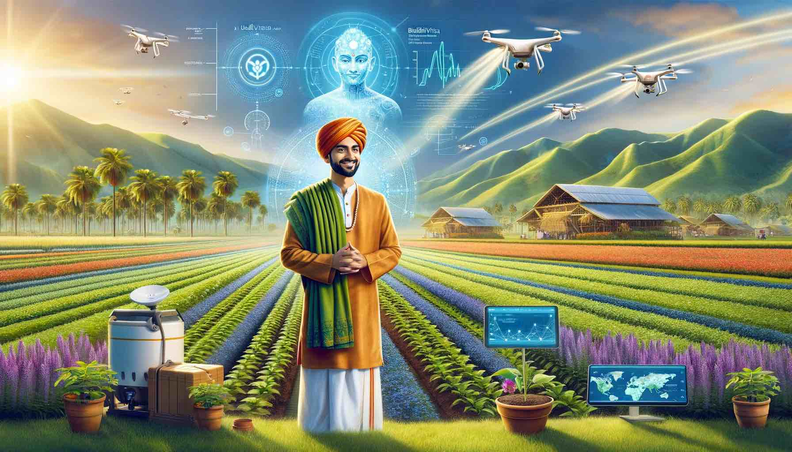
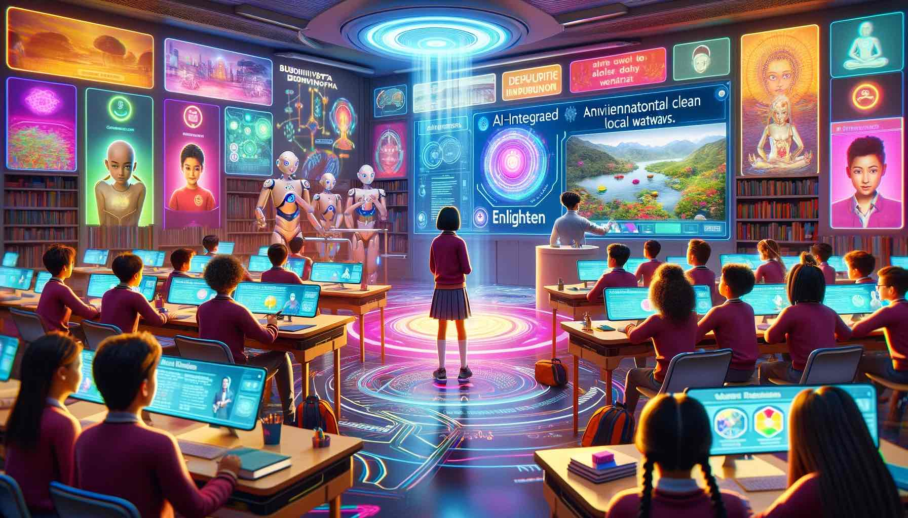
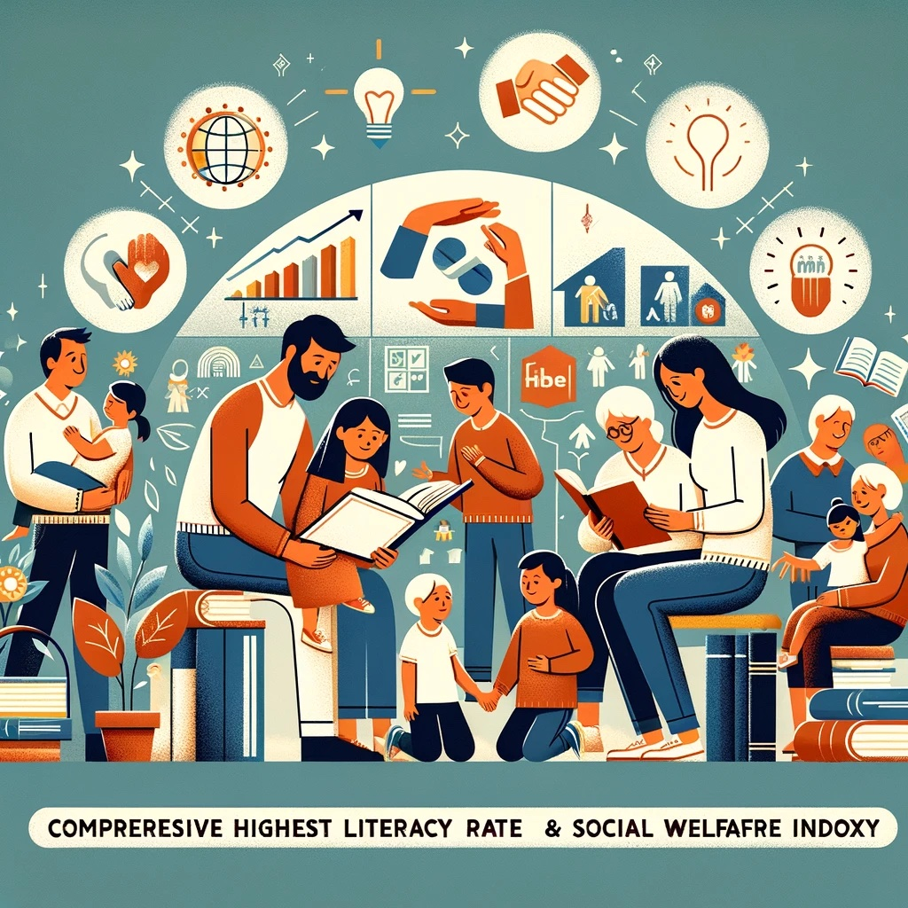
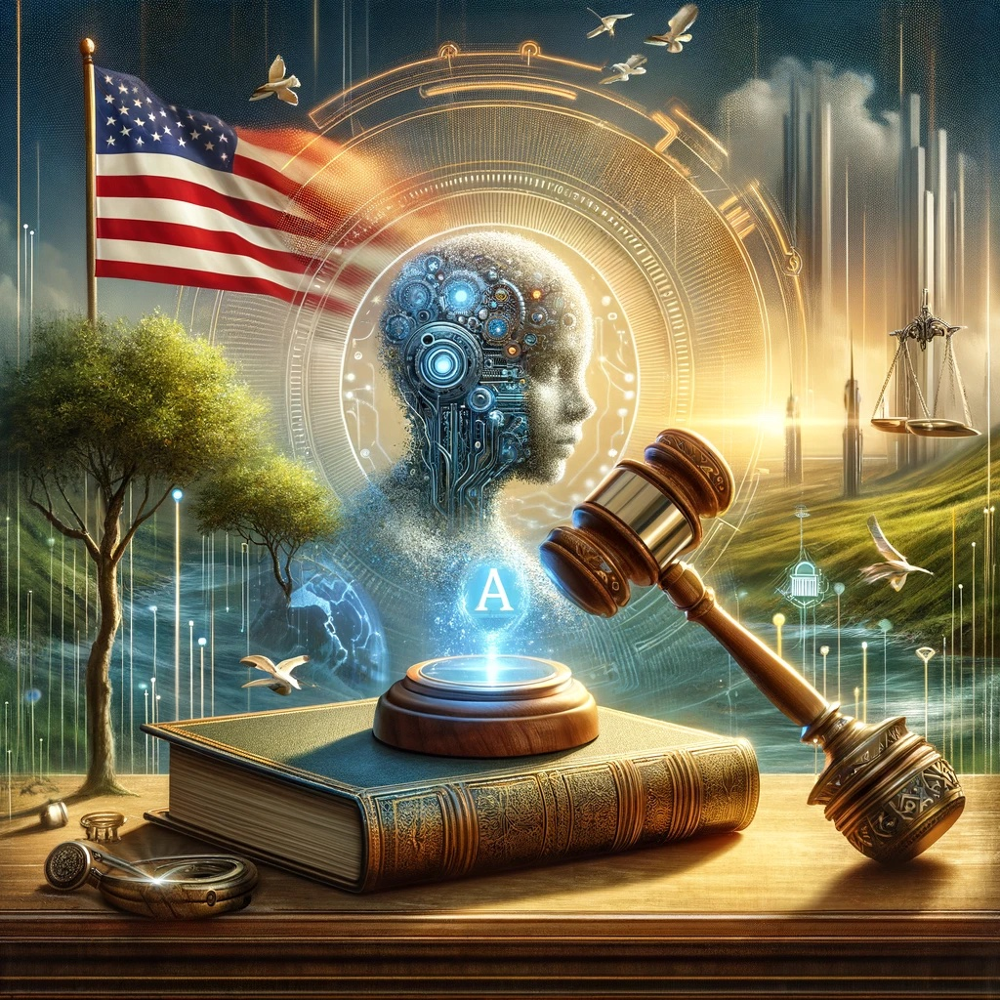

News
BuddhiVista's AI-Powered Disaster Response Saves Lives
In a remarkable display of technology and human compassion, BuddhiVista's advanced AI-driven disaster response system has been credited with saving thousands of lives during the recent cyclone that struck the nation's coastal regions. The system, known as "Guardian," predicted the cyclone's path with unprecedented accuracy, allowing for timely evacuations and preparations. Among the saved was the Choi family, who received a personalized alert from Guardian 48 hours before the cyclone hit, giving them ample time to reach a designated safe zone established by the AI's logistics module.
Mrs. Choi, a teacher and mother of two, recounted the harrowing experience, "We were terrified, but Guardian guided us every step of the way, from leaving our home to finding shelter. It even sent updates on the cyclone's status and reassured us with messages of support." The AI system not only forecasts disasters but also coordinates rescue operations, communicates with affected citizens, and allocates resources efficiently. This event has not only demonstrated the potential of AI in safeguarding lives but also highlighted BuddhiVista's commitment to leveraging technology for the greater good.

AI-Driven Agriculture Revolution in BuddhiVista: A Farmer's Tale
BuddhiVista has embarked on an AI-driven revolution in agriculture, aiming to increase crop yields, reduce environmental impact, and ensure food security for all its citizens. At the heart of this transformation is the story of Kavi Raj, a third-generation farmer who has witnessed firsthand the benefits of integrating AI into traditional farming practices.
Kavi's farm was selected as part of a pilot project for "AgriAI," a program designed to utilize drones, satellite imagery, and soil sensors to optimize irrigation, pest control, and planting strategies. Within the first year, Kavi saw a 40% increase in crop yield while using fewer resources. "It was like the land was speaking to us, telling us exactly what it needed," Kavi explained. "AgriAI not only helped us grow more food but also taught us how to coexist with nature more harmoniously."
The success of Kavi's farm has become a model for the nation, inspiring a wave of technological adoption among the farming community. This initiative reflects BuddhiVista's innovative approach to solving traditional problems, showing the world that AI can be a force for sustainability and prosperity.

Revolutionizing Education: BuddhiVista's AI-Integrated Learning System
BuddhiVista has launched a pioneering education system that blends AI with traditional teaching methods. The program, named "Enlighten," uses AI to create personalized learning paths for students, adapting to their strengths and weaknesses. One standout story is of Anaya, a 12-year-old student who discovered her passion for environmental science through the program. With the help of AI tutors, Anaya developed a project to clean local waterways, earning her national recognition. This system not only enhances learning outcomes but also encourages students to apply their knowledge to real-world problems, fostering a generation of informed, compassionate, and proactive citizens.

BuddhiVista's Green Energy Milestone: A Model for the World
In an unprecedented move, BuddhiVista has transitioned to 100% renewable energy, leveraging solar, wind, and hydroelectric power sources. This transition not only marks a significant achievement in the fight against climate change but also positions BuddhiVista as a global leader in sustainable practices. The initiative began five years ago, with the government investing heavily in technology and infrastructure to harness natural resources. Today, the nation not only meets its energy demands but also supplies clean energy to neighboring countries, demonstrating the potential for a sustainable future.

AI Governance Model Wins International Acclaim
The unique AI-led governance system of our nation has received widespread international acclaim for its efficiency, transparency, and fairness. The model has been recognized for enhancing public services, streamlining administrative processes, and significantly improving citizen satisfaction. This recognition highlights our nation's role as a pioneer in integrating technology with governance for the betterment of society.